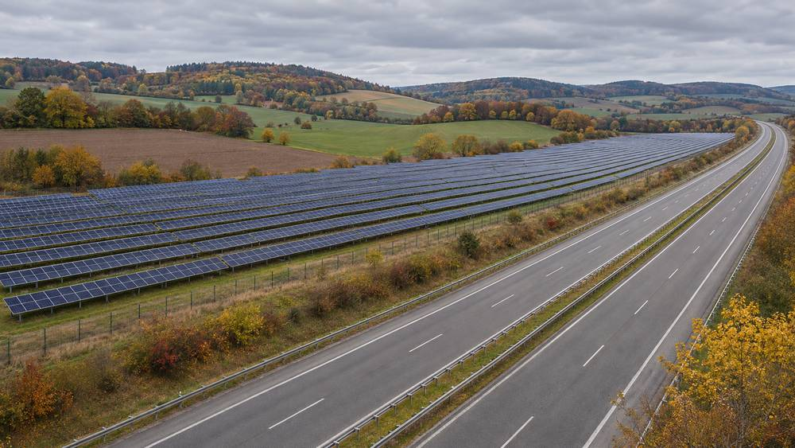

독일 림부르크 시의회, 고속도로변 21헥타르 태양광 승인…주민에 사업 15% 참여 기회 의무화

에너지공급사 EVL, 2027년 A3 고속도로변에 건설, 시민에너지협동조합 형태로 참여, 단지 들어설 지구에서는 반대 여론
독일 헤센주 림부르크 시의회가 11월 16일 회의에서 지역 에너지공급사 림부르크에너지공급(Energieversorgung Limburg, EVL)이 2027년 A3 고속도로변 린덴홀츠하우젠(Lindenholzhausen) 지구에 태양광 단지를 짓도록 승인했다. 부지는 지금까지 농지였던 약 21헥타르이며, 수익성을 맞추기 위해 에너지저장장치를 함께 설치한다. 도시계획 계약에는 EVL이 림부르크 주민에게 사업 전체 규모의 15%에 대해 시민에너지협동조합(Bürgerenergiegenossenschaft) 형태로 금전적 참여 기회를 제공할 '의무'가 있다는 조항이 들어갔고, 참여 범위와 조건은 이후 확정된다. 조항에는 협동조합 외에 다른 금융 수단으로도 주민이 건설 자금에 참여할 수 있게 한다는 문구가 있으며, 협동조합 지분을 가진 사람은 해마다 이익 배당을 받는다.
이 조항은 표결 전 진통 끝에 들어갔다. 린터 지구 위원회와 기독민주연합(CDU) 시의회 그룹이 원래 계약안에 시민참여 조항이 없다고 반발하며 '의도 표명'이 아닌 '의무'로 명시하라고 요구했다. 표결에서는 CDU·사회민주당(SPD)·녹색당이 찬성했고, 독일을 위한 대안(AfD)·자유민주당(FDP)과 단지가 들어설 린덴홀츠하우젠 지구 출신 CDU 시의원 2명이 반대했다. 정치권은 시민 참여로 주민의 수용성이 높아지길 기대하며, 자기 지붕에 태양광을 달 수 없는 세입자 같은 주민에게도 투자 기회가 된다고 설명한다.
EVL 사장 마르틴 에르틀(Martin Ertl)은 건설위원회에서 시민에게 '최대 23%'를 파는 안은 원치 않았고, 저장시설까지 포함하는 15% 안이 오히려 낫다고 말했다. 맑은 날 마이너스 전기요금이 생겨 저장 없이는 적자라는 것이 EVL의 설명이며, 대체 부지는 너무 작거나 EVL이 접근할 수 없어 탈락했다. 린덴홀츠하우젠에서는 농민이 빌려 쓰던 밭에 앞으로 30년간 태양광이 서고, 지주는 농사보다 훨씬 높은 임대료를 받는다. 이 지구에서는 반대 여론이 있다.
시민에너지 관점
림부르크 시의회는 21헥타르 단지에서 사업 규모의 15%를 주민에게 열도록 못 박았고, 이는 '의도 표명'에 머물던 초안을 '의무'로 바꾼 지구 위원회와 의원들의 요구 덕분이었다. 반대가 남은 지구에서는 임대료가 지주에게만 돌아간다는 불만이 나올 수 있는데, 지분과 배당을 지역 주민에게 열면 세입자처럼 지붕이 없는 사람도 이익을 나눌 길이 생긴다. 독일에서는 시민에너지협동조합이 재생에너지 확대의 한 축을 맡아 왔고, 지역이 소유하고 이익을 나누는 구조가 입지 갈등을 푸는 답으로 꼽혀 왔다. 15%가 충분한지는 참여 조건이 정해져야 알 수 있으니, 한국의 지자체와 주민도 인허가와 협약 단계에서 시민 지분을 '의도'가 아닌 '의무' 조항으로 요구하고 그 비율과 조건을 지켜봐야 한다.
출처: Mittelhessen.de 2026-11-17 Stefan Carsten Dickmann 원문 보기
바로잡습니다(2026.11.18)태양광 단지 위치를 '린터 지구 인근'에서 림부르크시 도시계획 자료에 따라 '린덴홀츠하우젠 지구'로 바로잡았습니다.